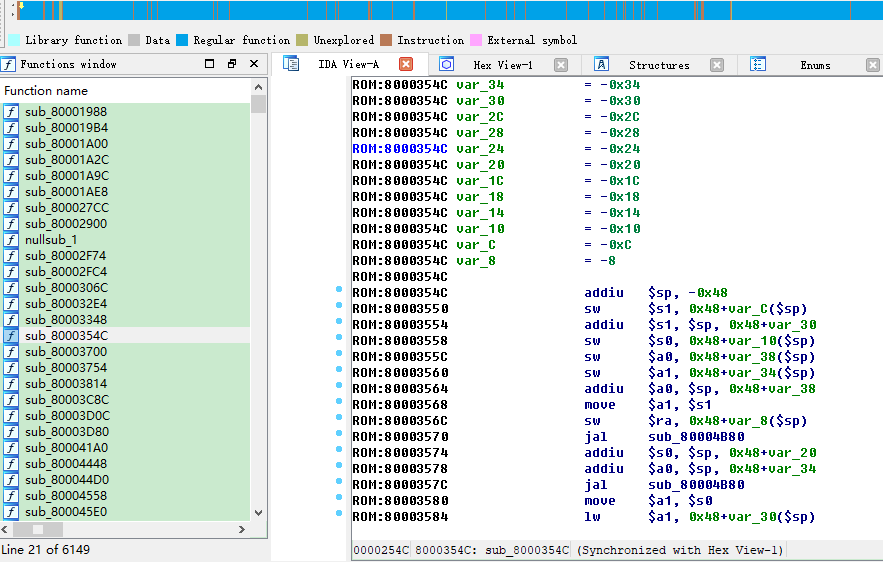
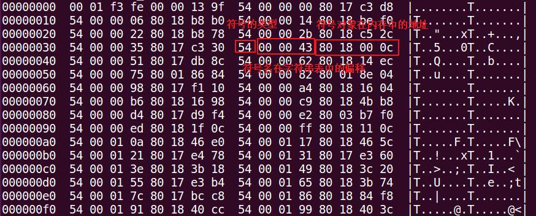
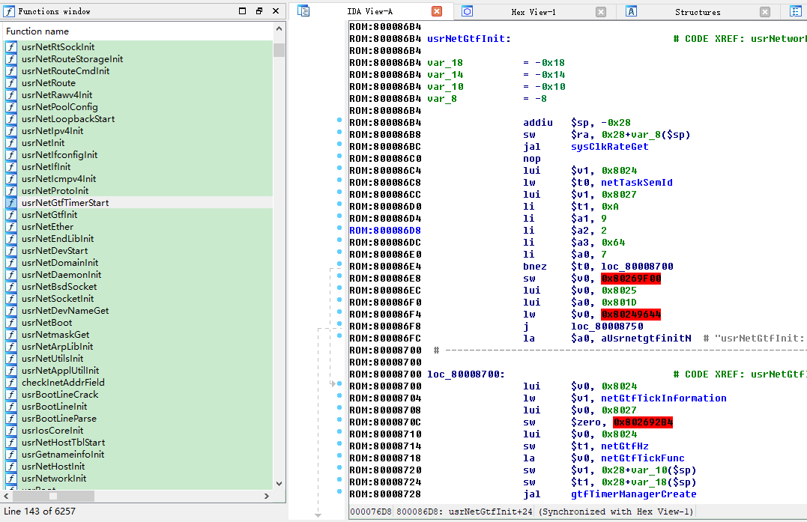

TP-Link wr886nv6 固件解析
前言
最近看了@小黑猪的一篇关于TP-Link wr886nv7固件初步分析的文章，由于之前很少分析基于VxWorks系统的固件，所以按照文章的思路动手重现了一下整个过程。
使用binwalk 初步分析
从TP-Link官网下载wr886的固件，由于没有找到v7版本的固件，所以下载的是v6版本的固件。对下载的压缩包进行解压，然后使用binwalk对文件wr886nv6.bin进行分析，如下。
1 | binwalk wr886nv6.bin |
从上述结果可知，除了开始部分的”U-Boot version string”、”CRC32”和”uImage header”之外，其余部分均为采用lzma进行压缩后的数据。其中，注意到偏移0xa200处的数据大小为2M多，猜测其可能包含一些有用的数据，提取该部分并使用lzma命令进行解压缩。
1 | 使用dd命令进行提取 |
在进行解压时提示”Compressed data is corrupt”。使用hexdump打开wr886nv6.bin，定位到0xc1240处，如下所示。发现0xc120更像是处于lzma压缩数据的中间，而不像是lzma压缩数据的结尾。
1 | hexdump -s 0xc1100 -n 512 -C wr886nv6.b |
从偏移0xc1240处往上寻找偏移0xa200处压缩数据的结尾，发现可能是在0xc04b1处，如下。
1 | hexdump -s 0xc04a0 -n 512 -C wr886nv6.bin |
对dd命令中的count参数进行修改后，即可成功提取并解压。
1 | dd if=wr886nv6.bin of=a200.lzma bs=1 skip=41472 count=746162 # 746162=0xc04b1-0xa200+1 |
说明：也可以运行命令
binwalk -e wr886nv6.bin，解压目录中的A200文件与通过上述方法得到的一致。
再次利用binwalk对得到的a200文件进行分析，如下。猜测这个文件很有可能就是路由器所运行的系统文件，版本为5.5.1。
1 | binwalk a200 |
使用IDA Pro分析
由于IDA Pro无法识别该文件，提示为”Binary file”，因此需要确定CPU的架构及加载基址。在”uImage header”部分已经有一些信息，如下，可以看到CPU架构为MIPS。
1 | binwalk wr886nv6.bin |
在uImage header中有一个Entry Point地址0x80010000，这个地址可能是uBoot程序的加载基址，而不是a200文件的加载基址。采用该地址作为加载基址，虽然也能识别出2000多个函数，但在后续导入符号表时会对不上。
也可以使用binwalk命令来查看CPU的架构，如下。可以看到，CPU架构为MIPS，同时为大端格式。
1 | binwalk -Y a200 |
在对偏移0xa200之前的一些数据进行分析时，可以看到一个疑似uImage header的数据段，其中有两处地址指向了0x80001000，这个地址也和devttys0博客中提到的加载基址相同，因此尝试使用该地址作为文件的加载地址。
在选择MIPS大端处理器以及设置加载基址后，IDA Pro的初步分析结果如下，可以看到共识别出6149个函数。
在对该文件进行分析时，发现IDA Pro中的Imports和Exports都是空的，可能是没有导入符号表的缘故。
符号表导入
使用binwalk直接提取该固件，在提取后的目录中搜索包含VxWorks中的某个关键函数如bzero的文件，如下。
1 | grep -r bzero . |
通过查看该文件，发现其中包含大量的VxWorks关键函数名，猜测可能是独立的符号表。在进行简单分析后，发现该文件存在比较明显的特征，如下。
根据这个符号文件的特征，编写idapython脚本来对文件的符号进行修复，如下。
1 | import idautils |
修复完成后IDA Pro中的函数列表如下所示。
导入符号之后，再对该文件进行分析就更方便了。
说明：直接使用
binwalk提取固件，在解压得到的文件中，绝大部分都是文本文件，包括脚本、图片等，只有3个文件为二进制文件，其中36AC为uBoot文件，A200为系统运行文件，C2E3A为符号文件。
相关链接
- TP-Link wr886nv7-V1.1.0 路由器分析 - 固件初步分析
- Reverse Engineering VxWorks Firmware: WRT54Gv8